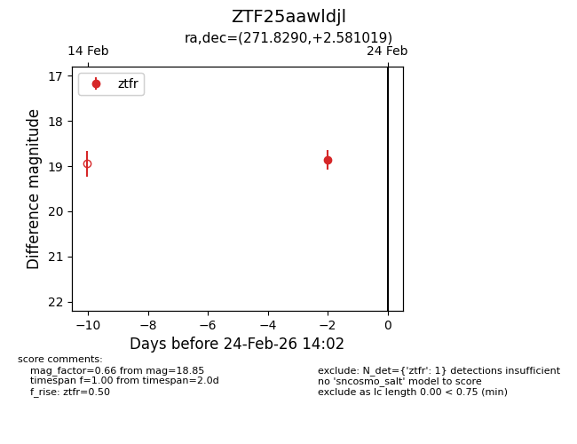
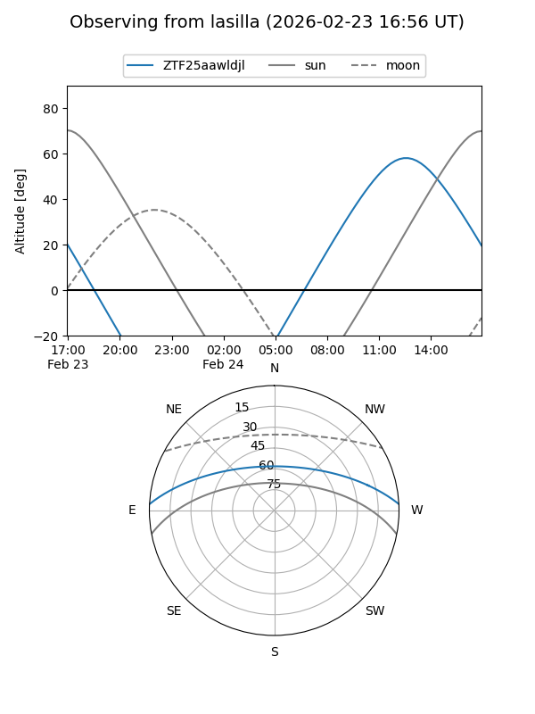
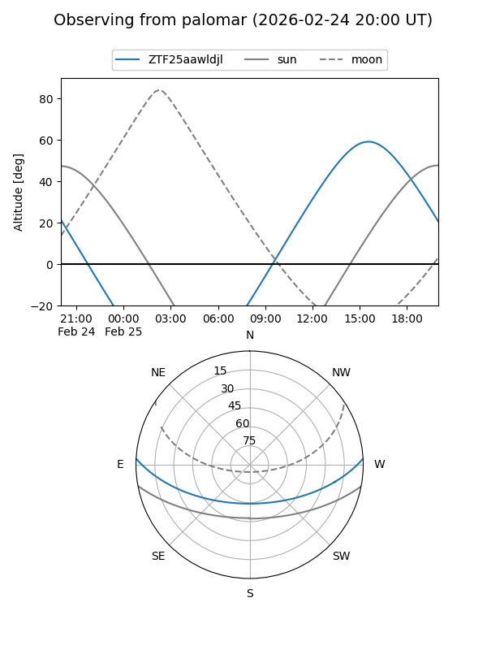
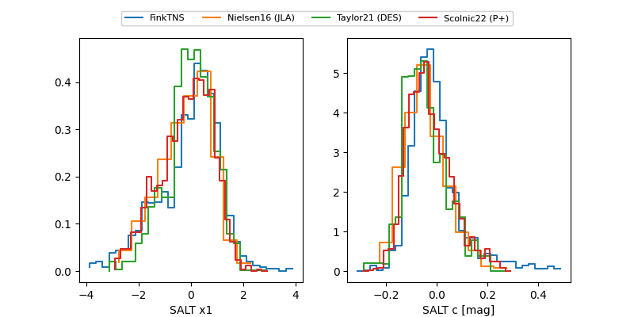

ZTF25aawldjl
Target ZTF25aawldjl at 2026-02-24 14:03
Aliases and brokers:
FINK: link
Lasair: link
ALeRCE: link
alt names
ZTF25aawldjl (ztf,fink_ztf)
Coordinates:
equatorial (ra, dec) = 271.8290,+2.58102
equatorial (HMS+DMS) = 18:07:18.96,+02:34:51.67
galactic (l, b) = (30.1831,+10.99033)
Flags:
Photometry:
last ztfr=18.85
1 ztfr detections
Lightcurve

Visibility


Additional plots
